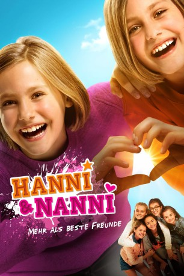

#9456 Hanni & Nanni: Mehr als beste Freunde
 
 IMDB-Wertung: 4.6 / 10
IMDB-Wertung: 4.6 / 10  Metascore: 0
Metascore: 0 
Hanni und Nanni werden von ihrer Mutter Susanne auf das Internat Lindenhof geschickt, da sie beruflich für längere Zeit verreisen muss und es Charlie dem Vater der Mädchen, nicht zutraut, sich um die Zwillinge zu kümmern, ohne dabei ein komplettes Chaos anzurichten. Hanni und Nanni finden das überhaupt nicht in Ordnung und planen, sich so daneben zu benehmen, dass sie noch während der Probezeit von der Schule fliegen. Doch dann hat Nanni plötzlich doch Spaß am Internatleben, entdeckt das Reiten für sich und findet neue Freundinnen, während Hanni immer noch auf den Rausschmiss hinarbeitet. Plötzlich sind die Zwillingsschwestern nicht mehr ganz so unzertrennlich wie bisher. Doch als Lindenhof verkauft zu werden droht, müssen sie sich zusammenraufen. Und der Schlüssel zur Rettung des Internats könnte im Haus des grantigen Godehard liegen, den Hanni eines Tages zufällig im Wald trifft...
Jahr: 2017
Dauer: 97 Minuten
FSK: 0
Land: Deutschland Studio: UPITonspuren:
Untertitel:
Auflösung: 1080p (1920x800) Größe: 5765 MB
Genre: Abenteuer, Familie
Regisseur: Isabell Suba
Drehbuch: Enid Blyton, Katrin Milhahn, Sandra Nettelbeck, Antonia Rothe
Soundtrack: Alex Komlew, Johannes Repka
Darsteller:
 Maria Schrader als Direktorin Theobald
Maria Schrader als Direktorin Theobald Katharina Thalbach als Mademoiselle Bertoux
Katharina Thalbach als Mademoiselle Bertoux Jessica Schwarz als Mutter
Jessica Schwarz als Mutter- Eva Bay als Investorin
- Ella Lee als June
- Tibor Locher als Frank Britz
 Lucas Reiber als Ole
Lucas Reiber als Ole- Laila Meinecke als Nanni
- Rosa Meinecke als Hanni
- Henry Hübchen als Godehard von Knigge
- Lynn Dortschack als Sumi
- Lia Huber als Barbara
- Sascha Vollmer als Vater
- Boss Burns als Wild
- Gina Henkel als Sportlehrerin
- Julia Koschitz als Frau Vogel
- Maja Meinhardt als Margret
- Faye Montana als Caro
- Shenia Pitschmann als Emma
- JoJo Putiloff als Mitschülerin
- Luise Wolfram als Isabella von Knigge
Datei: X:\4-Tetralogie(A-K)\Hanni & Nanni\Hanni & Nanni Mehr als beste Freunde (2017, FSK0, 1920x800).mkv seit 03.09.2018
Festplatte: HD Collection-3(N-Z)-6(A-Z)
 Es gibt insgesamt 7 Filme in der Gruppe '4-Tetralogie(A-K)\Hanni & Nanni'
Es gibt insgesamt 7 Filme in der Gruppe '4-Tetralogie(A-K)\Hanni & Nanni'